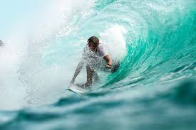
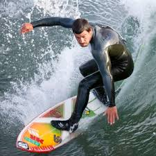

MIAMI-MARMOT
This mascot follows sport as surfing as they choose their theme color as Brown.
Surfing is a surface water sport in which an individual, a surfer, uses a board to ride on the forward section, or face, of a moving wave of water, which usually carries the surfer towards the shore
- George Freeth is the person who brought surfing to California
- The biggest wave recorded was 530 meters in Lituya bay, southern coast of Alaska.
- There are two types of surfing; short boarding and long boarding
- Short boarding is considered harder than long boarding because it requires more effort
- The longest ride ever done on a wave was 37 minutes in Pororoca.
 
Back to Index Page